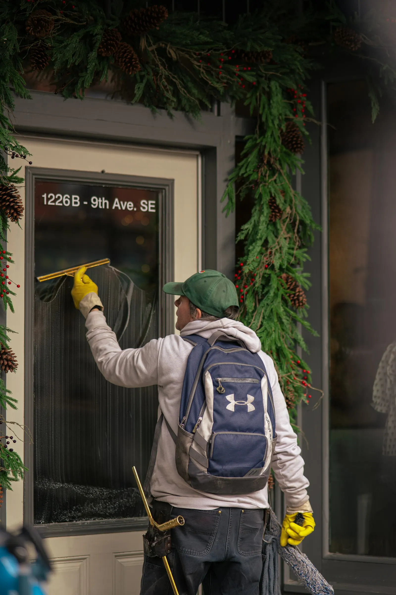
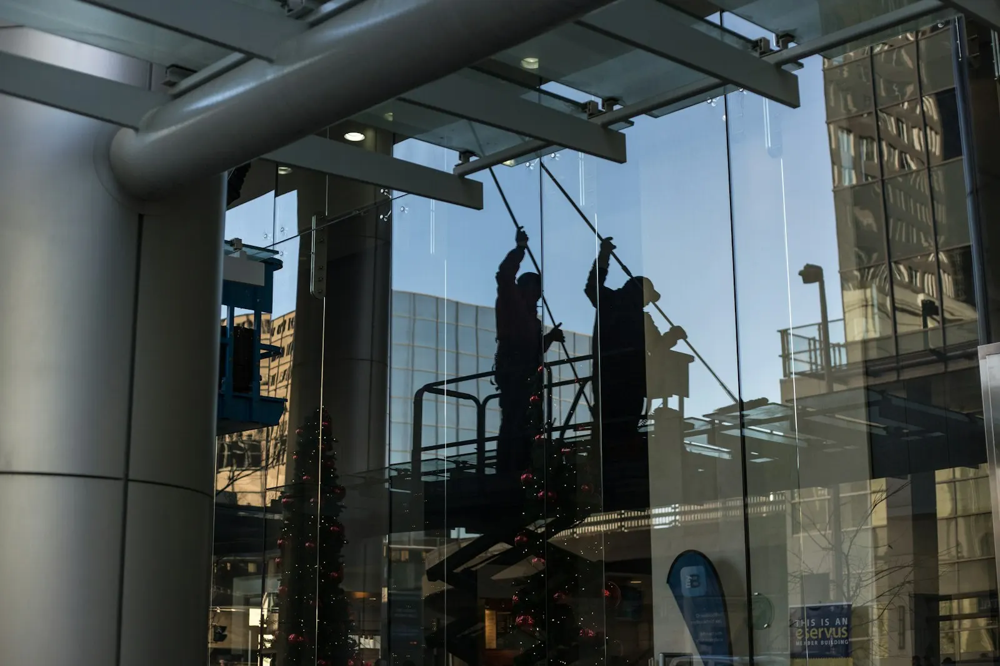

Heures d’ouverture
MW Multiservices fait le lavage de vitres et l’entretien paysager à Longueuil. 65 clients lui ont donné 5 sur 5 sur Google.

Appelez au (514) 603-7555 pour une soumission et la liste complète des services.
Vitres propres, sans traces, à l’intérieur comme à l’extérieur : demandez ce qui est inclus.
Entretien de votre terrain : décrivez vos besoins au téléphone.
Un appel suffit pour obtenir un prix pour votre maison ou votre commerce.
Une note parfaite après 65 avis : vos voisins de Longueuil sont satisfaits.
Appelez pour réserver votre lavage de vitres ou votre entretien de terrain.

| Dimanche | Ouvert 24 h |
|---|---|
| Lundi | Ouvert 24 h |
| Mardi | Ouvert 24 h |
| Mercredi | Ouvert 24 h |
| Jeudi | Ouvert 24 h |
| Vendredi | Ouvert 24 h |
| Samedi | Ouvert 24 h |
1566, rue Du Bordelais, Longueuil (Québec) J4M 2Z1
Basé au 1566, rue Du Bordelais, à Longueuil.
Appelez au (514) 603-7555 et décrivez le travail à faire.
Le lavage de vitres et le paysagement. Demandez au téléphone pour le reste.
À Longueuil, au 1566, rue Du Bordelais.